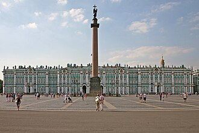
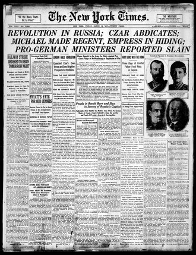

Inherits: Who started 1914 (ch. 4) · Feeds: Versailles (ch. 6), China 1911→49 (ch. 7)
1917
In Petrograd on the night of October 25, 1917, armed sailors and Red Guards walk past operating streetcars into the Winter Palace and arrest the remaining ministers of the Provisional Government. By morning, a new state announces itself to the world. What eight national classrooms do with that night—and the February street strikes that preceded it—is the subject of this chapter.

Revolution, coup, or external catalyst — what does your textbook call the collapse in Petrograd, and who gets to hold the steering wheel?
1 The boring facts
Dry scaffolding. These lines are the ruler; the ladder is the measurement.
- February 1917 (Julian calendar / March Gregorian): Food shortages and striking workers in Petrograd lead to mass garrison mutinies and the abdication of Tsar Nicholas II on March 2/15, ending three centuries of Romanov rule.
- Dual power (dvoevlastie) is established between the Provisional Government (led initially by Prince Lvov, later Alexander Kerensky) and the Petrograd Soviet of Workers' and Soldiers' Deputies.
- April 1917: Vladimir Lenin returns from exile via Switzerland and Germany, publishing the "April Theses" advocating all power to the Soviets and an immediate end to war involvement.
- July 1917: Mass anti-government demonstrations ("July Days") in Petrograd fail; the Provisional Government suppresses the Bolsheviks, forcing Lenin into hiding in Finland.
- August 1917: General Lavr Kornilov's attempted march on Petrograd fails after Kerensky releases and arms Bolshevik factory workers (Red Guards).
- October 24–25 (November 6–7 Gregorian): Bolshevik-led Red Guards take strategic infrastructure across Petrograd and capture the Winter Palace, arresting Provisional Government ministers.
- March 3, 1918: Soviet Russia signs the Treaty of Brest-Litovsk with the Central Powers, ceding substantial western territories to exit World War I.
2 The ladder
Eight narrators who cover the events of 1917, ordered from thinnest agency (external catalyst without local Petrograd actors) to thickest (planned top-down party conspiracy). Books outside the period or syllabus scope—Ukraine 1945–2018, Germany’s NS booklet, and Kazakhstan’s national history volume—are absent from the ladder rows. That absence reflects syllabus boundaries, not a historical verdict.
| Classroom | How the revolution begins | One-line tag |
|---|---|---|
| SD · MoE 2009 |
الأثر الذي أحدثته الثورة البلشفية 1917م في روسيا من مناداة بالحرية ودعوة للنضال والتحرر. “The impact created by the Bolshevik Revolution of 1917 CE in Russia in calling for freedom and calling for struggle and liberation.” التاريخ (History for the Third Grade), Ministry of Education 2009 · pp. 98–99 |
External catalyst for liberation |
| CN · 纲要 上 2019 |
马克思主义在中国的广泛传播是从十月革命后开始的……列宁领导的共产国际派代表来到中国，与陈独秀、李大钊共同商议建党事宜。 “The widespread dissemination of Marxism in China began after the October Revolution… the Communist International led by Lenin sent representatives to China to jointly discuss party-building matters with Chen Duxiu and Li Dazhao.” 中外历史纲要 上, State-compiled 2019 · printed pp. 142–143 |
Ideological arrival and party-building |
| IN · NCERT 2022+ |
“First World War (1914-1918); the Russian Revolution of 1917” |
Timeline marker and global influence |
| RU · Чубарьян 2023 |
«В России кризис режима, массовые выступления населения и солдат в феврале 1917 г. привели к отречению царя Николая II и переходу власти к Временному правительству… В октябре 1917 г. Временное правительство было свергнуто леворадикальными социалистами во главе с партией большевиков. Был провозглашён переход власти к Советам…» “In Russia, the crisis of the regime, mass demonstrations of the population and soldiers in February 1917 led to the abdication of Tsar Nicholas II and the transition of power to the Provisional Government… In October 1917, the Provisional Government was overthrown by left-radical socialists headed by the Bolshevik Party. The transition of power to the Soviets… was proclaimed.” Всеобщая история. Новейшая история 1914–1945, 10 кл., Просвещение 2023 · pp. 39–40 |
Single Great Revolution, passive transition |
| BY · Кошелев 2021 |
«Таким образом, в первые дни Февральской революции в Петрограде установилось двоевластие… Захват власти большевиками. Октябрьская революция… практически не встретив сопротивления, установили контроль над важнейшими объектами столицы… Октябрьская революция 1917 г. стала важнейшим событием в мировой истории.» “Thus, in the first days of the February Revolution, dual power was established in Petrograd… Seizure of power by the Bolsheviks. October Revolution… having met no resistance, established control over the most important objects of the capital… The October Revolution of 1917 became the most important event in world history.” Всемирная история, 11 кл., БГУ 2021 · pp. 106, 108, 109, 110 |
Dual power and world-historical event |
| IT · Sabbatucci–Vidotto 2004 |
«Nella notte fra il 6 e il 7 novembre 1917… un’insurrezione guidata dai bolscevichi rovesciava in Russia il governo provvisorio… Trotzkij fu l’organizzatore e la mente militare dell’insurrezione… L’assalto al Palazzo d’Inverno… fu praticamente incruento…» “In the night between 6 and 7 November 1917… an insurrection led by the Bolsheviks overthrew in Russia the provisional government… Trotsky was the organizer and the military mind of the insurrection… The assault on the Winter Palace… was practically bloodless…” Il mondo contemporaneo, Laterza 2004 · pp. 291, 306 |
Insurrection and military organizer |
| US · OpenStax 2022 |
“In March (February under the Julian calendar used in Russia), close to 100,000 people went on strike in the capital of Petrograd… Tsar Nicholas II was forced to abdicate… Germany helped him [Lenin] return… In the October Revolution in 1917, Lenin led a coup and seized power from the other political factions in Petrograd.” World History, Volume 2: from 1400, OpenStax 2022 · pp. 462, 464 |
German assistance and Bolshevik coup |
| UK · Lowe 2013 |
“The first revolution (February/March) overthrew the Tsar and set up a moderate provisional government… When this coped no better than the Tsar, it was itself overthrown by a second uprising: the Bolshevik revolution (October/November)… But it was Leon Trotsky who made most of the plans, which went off without a hitch. It was almost a bloodless coup, enabling Lenin to announce that the provisional government had been overthrown.” Mastering Modern World History, 5th ed., Palgrave Macmillan 2013 · pp. 508, 518 |
Planned coup without a hitch |
3 The tell
Every narrator agrees that the tsarist state collapsed in early 1917 and that by November a Bolshevik government held Petrograd. The debate in the grammar is whether October was a continuation of popular will, a tactical insurrection, or a top-down party takeover.
Sudan, China, and India treat 1917 as an external spark. In Khartoum's syllabus, Petrograd contains no streets or politicians; the revolution exists as an abstract impulse "calling for freedom and calling for struggle" that energized Sudan's anti-colonial movement. Beijing's state textbook uses October as an ideological timestamp: Marxism arrives in China after 1917, followed by Comintern representatives who assist in founding the Chinese Communist Party. For New Delhi's NCERT volume, 1917 is a milestone on a world timeline that set up the Comintern. In all three classrooms, what happened inside Petrograd is replaced by what Petrograd did for foreign liberation movements.
Russia's state textbook packages February and October under a single unified heading: "The Great Russian Revolution of 1917." The grammar of October is notable for its passive constructions: the Provisional Government "was overthrown by left-radical socialists," and the transition of power "was proclaimed." Lenin appears not as a conspirator executing a midnight seizure, but as the figure who "became head of government." The single-heading framing presents 1917 as one continuous transformation of the Russian state, softening the rift between the democratic February spring and the October party takeover.
“The October Revolution of 1917 became the most important event in world history.”
BY · Кошелев и др., Всемирная история, 11 кл. (2021) · p. 110Belarus takes the strongest ideological position in the corpus. While acknowledging the bread queue origin of February and naming the dual power (dvoevlastie) between the Duma and the Petrograd Soviet, section 14 elevates October as "the most important event in world history." It quotes playwright Bernard Shaw's 1931 visit to Moscow as evidence of Western admiration for Soviet success . The Red Guard takeover is described as meeting "practically no resistance," framing the collapse of the Provisional Government as an inevitable historical transition.
Italy and the Anglo-American textbooks shift the vocabulary from historical process to tactical operation. Sabbatucci–Vidotto label October an "insurrection" and single out Leon Trotsky as the "organizer and the military mind" who engineered the takeover, explicitly comparing the assault on the Winter Palace to the storming of the Bastille in 1789 while observing that it was "practically bloodless."
The US and UK books explicitly introduce the word "coup." OpenStax records that "Germany helped him return" and that "Lenin led a coup and seized power from the other political factions." Norman Lowe's UK text goes further, crediting Trotsky with plans that "went off without a hitch" and describing October as "almost a bloodless coup." Where Moscow sees a Great Revolution and Minsk sees the central event of world history, London and Washington describe a targeted party maneuver conducted while the rest of the city went about its evening.

4 Credit where due
Fairness, paid in installments
Sabbatucci–Vidotto (IT) earns the credit lead for tactical historiography. It alone among the mainland European volumes names Leon Trotsky as the operational architect and "military mind" of the October insurrection, restoring the specific tactical agency that Soviet-era and modern Russian state narratives frequently diffuse into collective party passive voice.
Lowe (UK) deserves recognition for historiographical balance. It presents February as a genuine popular uprising ignited by bread shortages and garrison mutinies, while framing October as a carefully planned coup, giving students the analytical tools to distinguish between spontaneous mass movement and organized party seizure.
Koshelev (BY) merits credit for structural clarity on the spring of 1917. It clearly defines the mechanics of dvoevlastie (dual power) between the official Provisional Government and the unofficial Petrograd Soviet, explaining how authority fractured before October.
5 Where this stops being true
Limits
This comparison covers eight national textbooks that include 1917 within their general world history framework. It does not represent every textbook published in these countries, but rather the specific state-approved or dominant market editions in our corpus.
Two volumes in our corpus are out of chronological scope for 1917: Ukraine’s 11th-grade textbook covers 1945–2018, and Germany’s BPB volume focuses on National Socialism and the Holocaust (1939–1945). Their absence from the ladder is a matter of volume scope, not syllabus avoidance.
Kazakhstan’s 11th-grade volume (*История Казахстана*) covers 1917 strictly through a national-history lens—focusing on the Alash autonomy movement, Turkestan, and regional Soviet consolidation. Under our corpus rules, KZ is not a general world-history narrator and is tracked in the receipts rather than as a peer ladder column.
Two findings kept verbatim because errors are data: NCERT dates the founding of the Comintern to March 1918 — the Third International was founded in March 1919. And the Sudanese passage is rendered from an Arabic extraction whose ligatures do not survive machine reading; its printed page must be eye-checked against the PDF before this chapter ships.
6 Receipts
- RU — А. О. Чубарьян, Всеобщая история. Новейшая история 1914–1945 гг., 10 кл. (Просвещение 2023), pp. 39–40, 44–45, 219.
- BY — В. С. Кошелев и др., Всемирная история. XIX — начало XXI в., 11 кл. (БГУ 2021), §14, pp. 105–110.
- IT — G. Sabbatucci & V. Vidotto, Il mondo contemporaneo (Laterza 2004), pp. 291–292, 302–307.
- CN — 《中外历史纲要（上）》 (人民教育出版社 2019), printed pp. 142–143.
- IN — NCERT, Themes in World History, Class XI (post-2022 rationalized edition), pp. 130, 171.
- SD — Ministry of Education, History for the Third Grade of Secondary School (Khartoum 2009), pp. 98–99.
- US — OpenStax, World History, Volume 2: from 1400 (2022), Chapter 14, pp. 462–464.
- UK — Norman Lowe, Mastering Modern World History, 5th ed. (Palgrave Macmillan 2013), pp. 508, 514–518.
- 0 in-scope UA (1945–2018 syllabus) · DE (NS 1939–1945 booklet) · KZ (national history — not a world-history column)
Now look up what your textbook calls it.